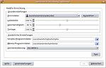

Hadifix
Archivierte Anleitung
Dieser Artikel wurde archiviert, da er - oder Teile daraus - nur noch unter einer älteren Ubuntu-Version nutzbar ist. Diese Anleitung wird vom Wiki-Team weder auf Richtigkeit überprüft noch anderweitig gepflegt. Zusätzlich wurde der Artikel für weitere Änderungen gesperrt.
Anmerkung: Anwendungsbeispiele für die Sprachausgabe mit Hadifix (txt2pho und mbrola) fehlen, ebenso wie ein Installations- und Deinstallations-Skript.
Zum Verständnis dieses Artikels sind folgende Seiten hilfreich:
Die Sprachausgabe ist die Möglichkeit geschriebenen Text in gesprochene Sprache umzuwandeln. Dazu müssen mehrere unterschiedliche Arten von Programmen Hand in Hand miteinander arbeiten. Leider gibt es zur Zeit noch kein durchgängiges Konzept, so das dass Einrichten noch mit verhältnismäßig viel Handarbeit verbunden ist. Dies liegt u.a. daran, dass einige der benötigten Programme unter anderen (teilweise restriktiveren) Lizenzen stehen als der GPL und deshalb nicht als fertige Pakete für X|K|Ubuntu angeboten werden können.
In diesem Artikel wird beschrieben, wie man ein "Back-End" für eine Sprachausgabe mit deutschen Stimmen unter (K)Ubuntu installiert. Die hier vorgestellte Möglichkeit wird im allgemeinen als Hadifix bezeichnet. Dies ist jedoch nicht ganz korrekt. Eigentlich besteht die Lösung aus zwei Teilen: einem Programm das Texte in Phoneme zerlegt (vereinfacht gesagt in Lautschrift) und aus dem HADIFIX Projekt  stammt und einem, das dieser Phoneme in Audiodaten umwandelt (den eigentlichen Stimmen), das aus dem MBROLA Projekt
stammt und einem, das dieser Phoneme in Audiodaten umwandelt (den eigentlichen Stimmen), das aus dem MBROLA Projekt  stammt. Die MBROLA-Stimmen sind zur Zeit (Stand: Juli 2008) die einzigen Stimmen die für nicht-kommerzielle und nicht-militärische Nutzung kostenfrei zur Verfügung stehen. Lediglich espeak bietet noch eine deutsche Stimme, an die sogar unter der GPL-Lizenz steht. Die MBROLA-Stimmen sind jedoch stärker auf ein natürliches Klangbild hin konzipiert. Dies muss jedoch nicht heißen, dass die Verständlichkeit deswegen auch besser sein muss. Um die Sprachausgabe tatsächlich nutzen zu können, müssen noch Programme installiert werden, die als "Front-End" dienen.
stammt. Die MBROLA-Stimmen sind zur Zeit (Stand: Juli 2008) die einzigen Stimmen die für nicht-kommerzielle und nicht-militärische Nutzung kostenfrei zur Verfügung stehen. Lediglich espeak bietet noch eine deutsche Stimme, an die sogar unter der GPL-Lizenz steht. Die MBROLA-Stimmen sind jedoch stärker auf ein natürliches Klangbild hin konzipiert. Dies muss jedoch nicht heißen, dass die Verständlichkeit deswegen auch besser sein muss. Um die Sprachausgabe tatsächlich nutzen zu können, müssen noch Programme installiert werden, die als "Front-End" dienen.
Installation¶
Leider sind die meisten benötigten Pakete und Dateien nicht über die offiziellen Paketquellen verfügbar.
Die Installation benötigt inklusive aller Stimmen bis zu ca. 265 MByte Festplattenplatz. Der benötigte Platz kann um bis zu 175 MByte reduziert werden, indem nur eine der "kleineren" Stimmen installiert wird. Die KDE-spezifischen Pakete benötigen bis zu ca. 75 MByte. Sind bereits KDE-Programme oder KDE selbst installiert, kann der benötigte Platz hierfür kleiner sein. Diese Lösung ist für die amd64-Architektur nicht geeignet, da es kein amd64-Debian-Paket von MBROLA gibt!
Hinweis:
* Grundsätzlich ist es möglich Hadifix auch ohne die Installation von kttds zu benutzen. Hinweise dazu findet man in der Gentoo-Wiki .
Hadifix ist für nicht-kommerzielle und nicht-militärische Nutzung frei. Näheres dazu findet man für die Dateien des MBROLA Projekt
unter der MBROLA-Lizenz . Die Lizenz-Bedingungen des HADIFIX Projekts findet man hier .
Download¶
Benötigt wird das Archiv txt2pho.zip  von Txt2pho - German TTS-frontend für das MBROLA-Synthesesystem ,
von Txt2pho - German TTS-frontend für das MBROLA-Synthesesystem ,
das Debian-Paket mbrola3.0.1h_i386.deb und mindestens eine Stimme
de1-980227.zip
(weibliche Stimme de1, ca. 11 MByte)de2-990106.zip
(männliche Stimme de2, ca. 10 MByte)de3-000307.zip
(weibliche Stimme de3, ca. 11 Mbyte)de4.zip
(männliche Stimme de4, ca. 21 MByte)de5.zip
(männliche Stimme de5, ca. 14 MByte)de6.zip
(männliche Stimme de6, ca. 54 MByte)de7.zip
(weibliche Stimme de7, ca. 54 MByte)de8.zip
(männliche Stimme mit bayrischem Akzent de8, ca. 10 MByte)
des "The MBROLA Project" . Eine Liste von Mirror-Sites für die MBROLA-Dateien findet man hier: MBROLA Mirror Sites .
txt2pho¶
Das Archiv txt2pho.zip wird anschließend mit Rootrechten in das Verzeichnis /usr/share entpackt [3] und die Datei txt2pho ausführbar gemacht [4].
z.B im Terminal [5]:
sudo unzip txt2pho.zip -d /usr/share/ # Entpacken sudo chmod 755 /usr/share/txt2pho/txt2pho # Ausführbar machen
Anschließend muss die Datei /usr/share/txt2pho/txt2phorc mit einem Editor mit Root-Rechten [6] angepasst werden. Die Zeilen
DATAPATH=/home/tpo/txt2pho/data/ INVPATH=/home/tpo/txt2pho/data/
müssen in
DATAPATH=/usr/share/txt2pho/data/ INVPATH=/usr/share/txt2pho/data/
geändert werden.
Die Datei muss anschließend als /etc/txt2pho gespeichert werden.
mbrola¶
Weiterhin muss das Debian-Paket mbrola3.0.1h_i386.deb installiert werden [7].
Hinweis!
Fremdpakete können das System gefährden.
Stimmen¶
Die Stimmen-Dateien müssen entpackt werden z.B. mit Rootrechten in das Verzeichnis /usr/share/mbrola/ [3]. Dabei ist zu beachten das die Stimmen-Dateien de4.zip und de7.zip fehlerhaft sind, weil beim Entpacken nicht automatisch die entsprechenden Unterverzeichnisse /usr/share/mbrola/de4 und /usr/share/mbrola/de7 angelegt werden.
Dies kann im Terminal z.B. wie folgt geschehen:
sudo unzip de1-980227.zip -d /usr/share/mbrola # Entpacken von Stimme de1 sudo unzip de2-990106.zip -d /usr/share/mbrola # Entpacken von Stimme de2 sudo unzip de3-000307.zip -d /usr/share/mbrola # Entpacken von Stimme de3 sudo unzip de4.zip -d /usr/share/mbrola/de4 # Entpacken von Stimme de4 sudo unzip de5.zip -d /usr/share/mbrola # Entpacken von Stimme de5 sudo unzip de6.zip -d /usr/share/mbrola # Entpacken von Stimme de6 sudo unzip de7.zip -d /usr/share/mbrola/de7 # Entpacken von Stimme de7 sudo unzip de8.zip -d /usr/share/mbrola # Entpacken von Stimme de8
Hinweis:
Es ist nicht zwingend notwendig die vorgegebene Ordnerstruktur zu verwenden. ktts benötigt nur die Sprachdateien de1 bis de8. Der Pfad, in dem sie liegen, kann beliebig gewählt werden. Das modifizierte Backend "festival mit Mbrola-Stimmen" benötigt jedoch die vorgegebene Ordnerstruktur.
kttsd¶
Zum Schluss müssen noch folgende Pakete installiert werden [1]:
kttsd
kttsd-contrib-plugins (universe [2] )
 mit apturl
mit apturl
Paketliste zum Kopieren:
sudo apt-get install kttsd kttsd-contrib-plugins
sudo aptitude install kttsd kttsd-contrib-plugins
Optional benötigt man noch
language-pack-kde-de
mit apturl
Paketliste zum Kopieren:
sudo apt-get install language-pack-kde-de
sudo aptitude install language-pack-kde-de
falls man eine deutschsprachige Menüführung möchte.
Anschließend müssen die Stimmen mithilfe von
"Anwendungen -> Barrierefreiheit -> kttsmgr" (GNOME) bzw.
"K-Menü -> Dienstprogramme -> kttsmgr - Sprachverwaltung" (KDE)
eingerichtet werden.
Hinweis:
Sollte die Menüführung in Englisch sein, muss das Paket language-pack-kde-de nachinstalliert [1] und anschließend kttsmgr neu gestartet werden.
Hierzu müssen
unter "Allgemein" "Sprachausgabe aktivieren (KTTSD)" angekreuzt (ggf. lässt sich die Option erst ankreuzen nachdem mindestens eine Stimme eingerichtet wurde) und
bei GNOME unter "Audio" bei "Verwendete Ausgabe" "ALSA" ausgewählt werden (unter KDE kann die Standardeinstellung "aRts" beibehalten werden).
Achtung!
Belässt man unter GNOME die Einstellung von "Audio" bei "Verwendete Ausgabe" auf der Standardeinstellung "aRts" kann dies zum Einfrieren von kttsmgr führen, wenn eine Sprachausgabe ausgeführt werden soll.
|  |
Außerdem muss für jede Stimme
unter "Sprecher -> Hinzufügen", "Sprache:" "Deutsch" und bei "Synthesizer:" "Hadifix" auswählen und "OK" angeklickt,
anschließend unter "Hadifix-Einrichten -> Grundeinstellungen -> Stimmdatei" eine der installierten Stimmdateien mit "Auswählen" (z.B. /usr/share/mbrola/de1/de1) eintragen,
unter "Zusätzliche Einstellungen -> txt2pho-Programmdatei" /usr/share/txt2pho/txt2pho eintragen,
unter "Zusätzliche Einstellungen -> Mbrola-Programmdatei" /usr/bin/mbrola eintragen und
unter "Zusätzliche Einstellungen -> Zeichenkodierung" "ISO-8859-1" auswählt werden.
Hinweis:
Sollte unter "Zusätzliche Einstellungen -> txt2pho-Programmdatei" oder "Zusätzliche Einstellungen -> Mbrola-Programmdatei" nicht schon automatisch die richtigen Vorgaben (siehe oben) eingetragen sein, deutet das darauf hin, dass die Installation von "txt2pho" oder "Mbrola" nicht ordnungsgemäß durchgeführt wurde.
Es ist außerdem empfehlenswert, den Standardwert für Geschwindigkeit auf einen Wert zwischen 82% und 87% einzustellen.
Anschließend kann mit dem Button "Test" geprüft werden, ob die Stimme korrekt funktioniert.
Die unter der Registerkarte "Sprecher" als erste angezeigte Stimme ist die Standard-Stimme. Mit den Buttons "Aufwärts" und "Abwärts" kann eine beliebige Stimme an die erste Position geschoben werden und wird damit zur Standard-Stimme.
Hinweis:
Die Stimme "de8: männliche Stimme mit bayrischem Akzent" scheint nicht korrekt zu funktionieren, da sie einige Laute nicht oder nicht korrekt wiedergibt.
Deinstallation¶
Die Pakete
mbrola
kttsd
kttsd-contrib-plugins (universe, [2])
language-pack-kde-de (notwendig für eine deutschsprachige Menüführung)
lassen sich über die Paketverwaltung deinstallieren.
Die Stimmendateien sowie txt2pho müssen manuell entfernt werden indem man die entsprechenden Verzeichnisse (/usr/share/txt2pho und /usr/share/mbrola/de1 bis /usr/share/mbrola/de8) löscht.
Anwendungsbeispiele¶
Mit Konqueror kann man sich jetzt Webseiten vorlesen lassen. Dazu wählt man im Menü "Extras -> Text to Speech".
Mit
kmouthkann man z.B. Text eingeben, die direkt vorgelesen werden können.ksayitermöglicht es Dokumente oder den Inhalt der Zwischenablage vorzulesen.Durch den Konsolenbefehl:
dcop kttsd KSpeech sayText "Ich bin die Computerstimme." "de"
wird
kttsdangewiesen “Ich bin die Computerstimme.” als Auftrag einzutragen und mit der Sprachausgabe zu beginnen. Mehr dazu: KDE: Entwicklerhandbuch für KTTS .
Links¶
Gentoo-Wiki
enthält auch eine Beschreibung wie Hadifix (txt2pho & mbrola) ohne zusätzliche Programme direkt benutzt werden kann.Entwicklerhandbuch für KTTS - Die DCOP-Schnittstelle von KTTS
siehe dazu auch DCOP.Sprachsynthese unter Linux - Tux lernt sprechen von Michael Renner
Ausführliche Erklärung der Funktion von txt2pho, mbrola und diverser Hilfsprogramme.
- Erstellt mit Inyoka
-
 2004 – 2017 ubuntuusers.de • Einige Rechte vorbehalten
2004 – 2017 ubuntuusers.de • Einige Rechte vorbehalten
Lizenz • Kontakt • Datenschutz • Impressum • Serverstatus -
Serverhousing gespendet von